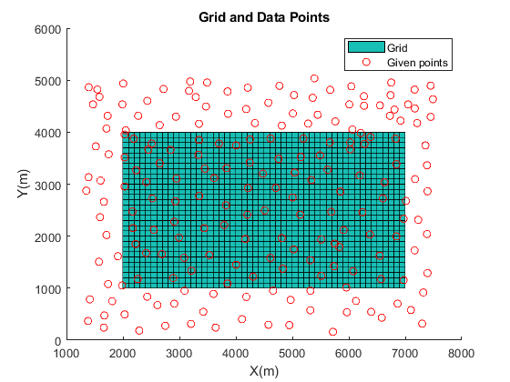
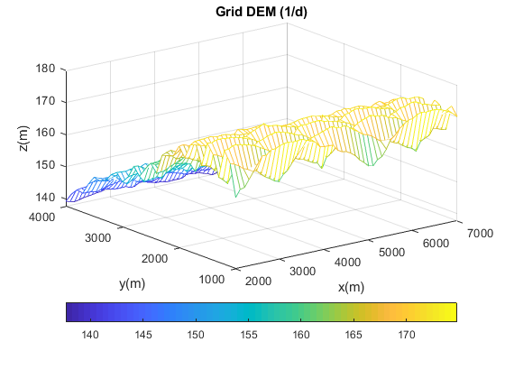
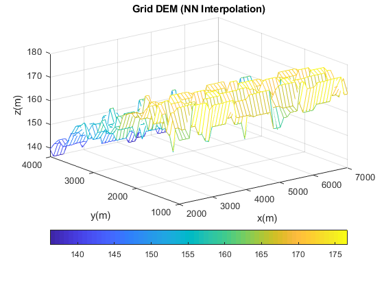
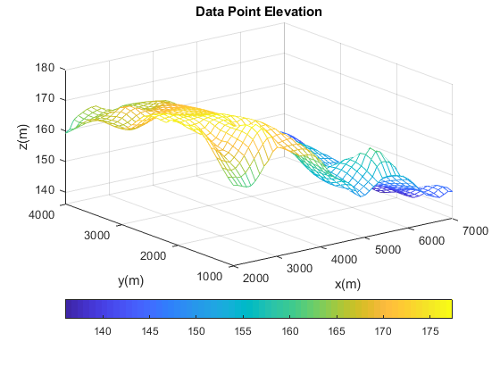
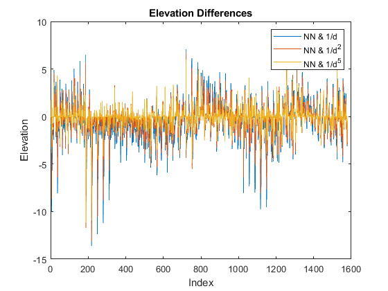

Contents
ESSE4640 DTM Lab 4
clc clear all format long ele = []; ele2 = []; ele5 = []; elenn = [];
1. Read Data and Generate a Grid
read file
%data = xlsread('lab4esse4640'); %%Initial (Given) Coordinates x = xlsread('lab4esse4640',1,'A2:A200') ; y = xlsread('lab4esse4640',1,'B2:B200') ; z = xlsread('lab4esse4640',1,'C2:C200') ; % Generate a 100m Grid LLX=2000; LLY=1000; URX=7000; URY=4000; xgrd = LLX:100:URX; ygrd = LLY:100:URY; [Xgrd,Ygrd] = meshgrid(xgrd,ygrd); figure(1) hold on Z0 = Xgrd.*0 + Ygrd.*0; surf(Xgrd,Ygrd,Z0); scatter(x,y,'R'); legend('Grid','Given points'); title('Grid and Data Points'); xlabel('X(m)'); ylabel('Y(m)'); hold off
2. Elevations at the Grid Point Using IDW Method
Weights 1/D
xgrd_size = size(xgrd) .* size(ygrd) for i=1:xgrd_size(2) for j= 1:size(x) D(j,i) = sqrt((Xgrd(i)-x(j))^2+(Ygrd(i)-y(j))^2); end end d1 = D; for i=1:xgrd_size(2) for counter = 1:15 NN = min(d1(:,i)); idx = find(d1(:,i) == NN); num(counter,i)=((1/NN)*z(idx)); Wgt(counter,i) = (1/NN); d1(idx,i) = 100000000; end end for i=1:xgrd_size(2) ele(i) = sum(num(:,i))/sum(Wgt(:,i)); end d2 = D; % Weight 1/D^2 for i=1:xgrd_size(2) for counter = 1:15 NN = min(d2(:,i)); idx = find(d2(:,i) == NN); num2(counter,i)=((1/NN^2)*z(idx)); Wgt2(counter,i) = (1/NN^2); d2(idx,i) = 100000000; end end for i = 1:xgrd_size(2) ele2(i) = sum(num2(:,i))/sum(Wgt2(:,i)); end d5 = D; % Weight 1/D^5 for i=1:xgrd_size(2) for counter = 1:15 NN = min(d5(:,i)); idx = find(d5(:,i) == NN); num5(counter,i)=((1/NN^5)*z(idx)); Wgt5(counter,i) = (1/NN^5); d5(idx,i) = 100000000; end end for i = 1:xgrd_size(2) ele5(i) = sum(num5(:,i))/sum(Wgt5(:,i)); end
xgrd_size =
1 1581
3. Elevations at the Grid Point Using NN Method
for i = 1:xgrd_size(2) for j = 1:15 end end for i = 1:xgrd_size(2) for j= 1:size(x) Dnn(i,j) = sqrt((Xgrd(i)-x(j))^2+(Ygrd(i)-y(j))^2); end NN = min(Dnn(i,:)); idx = find(Dnn(i,:) == NN); elenn(i) = z(idx); end
4. Stats
for i = 1:xgrd_size(2) dle1(i) = elenn(i)- ele(i); RMSE1(i) = (elenn(i)- ele(i))^2; end meanE1= mean(dle1); minE1 = min(dle1); maxE1 = max(dle1); stdeE1 = std(dle1); rmseE1 = sqrt(mean(RMSE1)); rangeE1 = range(dle1); % NN and 1/D^2 for i = 1:xgrd_size(2) dle2(i) = elenn(i)- ele2(i); RMSE2(i) = (elenn(i)- ele2(i))^2; end meanE2= mean(dle2); minE2 = min(dle2); maxE2 = max(dle2); stdeE2 = std(dle2); rmseE2 = sqrt(mean(RMSE2)); rangeE2 = range(dle2); % NN and 1/D^5 for i = 1:xgrd_size(2) dle5(i) = elenn(i)- ele5(i); RMSE5(i) = (elenn(i)- ele5(i))^2; end meanE5= mean(dle5); minE5 = min(dle5); maxE5 = max(dle5); stdeE5 = std(dle5); rmseE5 = sqrt(mean(RMSE5)); rangeE5 = range(dle5);
5. Graphs
%D1 figure; zgrd=reshape(ele,51,31).'; Zgrd = griddata(xgrd,ygrd,zgrd,Xgrd,Ygrd,'cubic'); %figure (2) mesh(Xgrd,Ygrd,Zgrd); title('Grid DEM (1/d)') xlabel('x(m)') ylabel('y(m)') zlabel('z(m)') colorbar('southoutside') figure; %D2 zgrd=reshape(ele2,51,31).'; Zgrd = griddata(xgrd,ygrd,zgrd,Xgrd,Ygrd,'cubic'); %figure (2) mesh(Xgrd,Ygrd,Zgrd); title('Grid DEM (1/d^2)') xlabel('x(m)') ylabel('y(m)') zlabel('z(m)') colorbar('southoutside') figure; %D5 zgrd=reshape(ele5,51,31).'; Zgrd = griddata(xgrd,ygrd,zgrd,Xgrd,Ygrd,'cubic'); %figure (2) mesh(Xgrd,Ygrd,Zgrd); title('Grid DEM (1/d^5)') xlabel('x(m)') ylabel('y(m)') zlabel('z(m)') colorbar('southoutside') figure; %NN zgrd=reshape(elenn,51,31).'; Zgrd = griddata(xgrd,ygrd,zgrd,Xgrd,Ygrd,'cubic'); %figure (2) mesh(Xgrd,Ygrd,Zgrd); title('Grid DEM (NN Interpolation)') xlabel('x(m)') ylabel('y(m)') zlabel('z(m)') colorbar('southoutside') figure; 
plot Data Points
Zgrd = griddata(x,y,z,Xgrd,Ygrd,'cubic'); mesh(Xgrd,Ygrd,Zgrd); title('Data Point Elevation') xlabel('x(m)') ylabel('y(m)') zlabel('z(m)') colorbar('southoutside') figure;
Elevation Difference
for i = 1:1581 index(i) = i; end plot(index,(ele-elenn)) hold on plot(index,(ele2-elenn)) plot(index,(ele5-elenn)) title('Elevation Differences') xlabel('Index') ylabel('Elevation') legend('NN & 1/d', 'NN & 1/d^2','NN & 1/d^5')